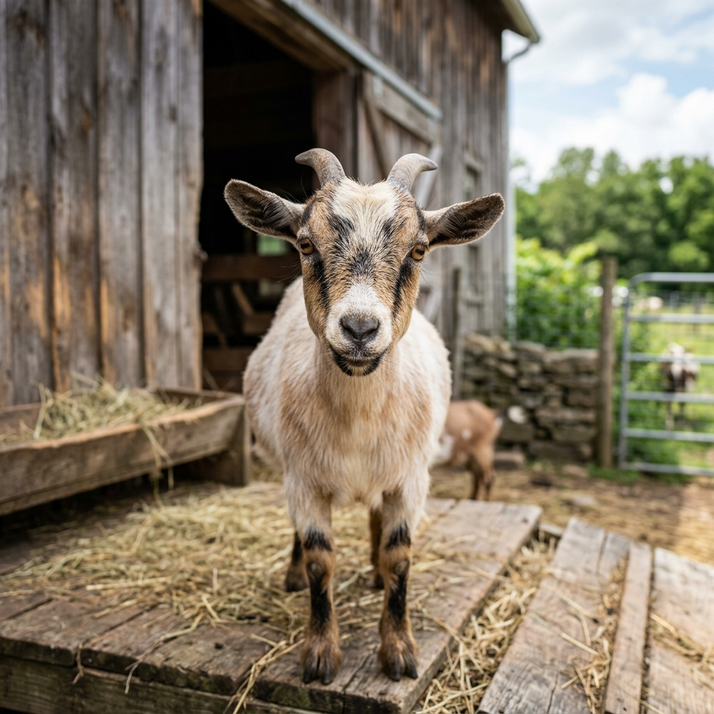
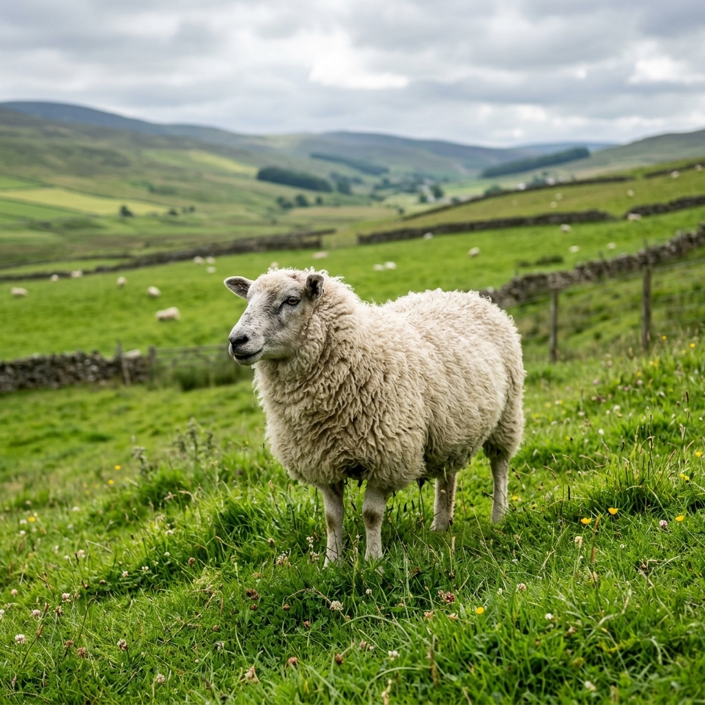
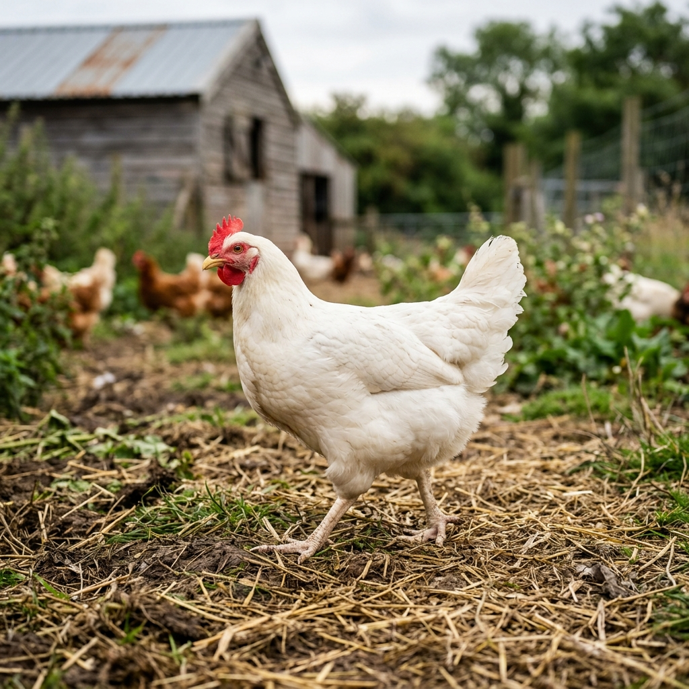
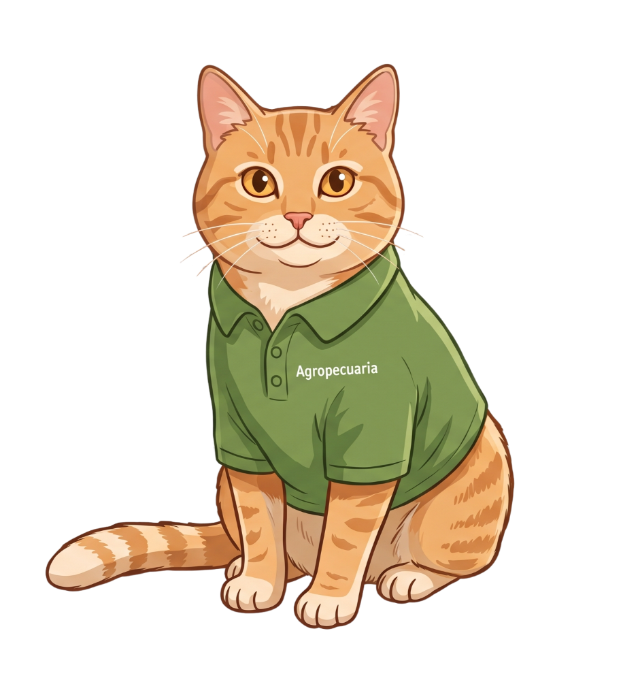

Ganancia: 0.95 kg/día
Consumo: 2.8 kg/día
Alta susceptibilidad térmica

Caprino (Leche/Carne)
Prod.: 2.5 kg o L/día
CMS: 1.8 kg/día
Gran capacidad de adaptación

Ovino
GMD: 0.25 kg/día
CMS: 1.5 kg/día
Sensible a estrés por manejo

Aves (Pollo Engorde)
Ganancia: 85 g/día
Consumo: 160 g/día
Metabolismo muy acelerado
¿Qué es el SNA?
El Sistema Nervioso Autónomo regula las funciones corporales involuntarias y se divide en
dos ramás principales:
el Simpático (prepara al animal para situaciones de estrés, lucha o huida) y el
Parasimpático (promueve el descanso, la digestión y el anabolismo).
Comprender el balance entre ambas vías es fundamental para garantizar el bienestar animal y optimizar el
rendimiento productivo.

Hari
¡Hola! 👋 Soy Hari, mucho gusto conocerte. Voy a ser tu compañero y guía de aprendizaje.
Presiona el botón de abajo para empezar a explorar juntos.
Escoge tu Nivel de Dificultad
Selecciona el nivel que mejor se
adapte a tu experiencia.
🌱
Principiante
Aprende jugando con Hari y Bella. Ideal para quienes comienzan a explorar el
Sistema Nervioso Autónomo.
🔬
Experto
Simulador completo con datos fisiológicos detallados y terminología técnica
avanzada.
Selecciona tu Especialidad
Elige el enfoque que corresponda a
tu área de estudio.
🩺
Veterinaria
Terminología clínica, receptores farmacológicos, neuroanatomía y respuestas
autonómicas con enfoque médico.
🌿
Agropecuaria
Impacto del SNA en la producción animal, consumo de materia seca, ganancia de
peso y bienestar en hacienda.
🐱 El Diagnóstico de Hari
📝 Cuestionario SNA
🎓 Evaluación SNA
20:00
Sistema Nervioso Autónomo
Simulador del impacto de la respuesta Simpática vs Parasimpática en la fisiología y
productividad animal.